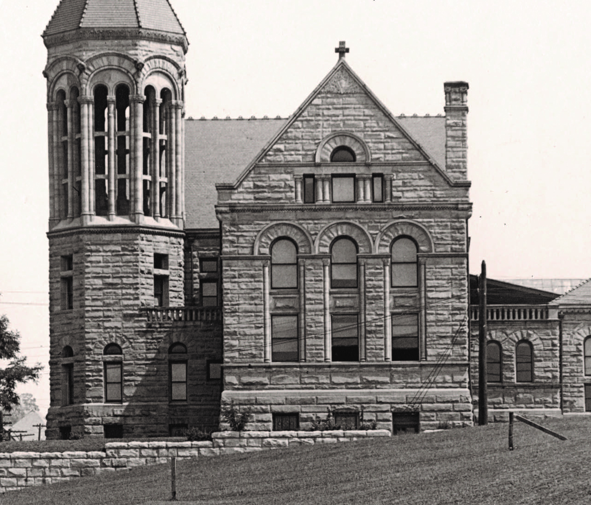
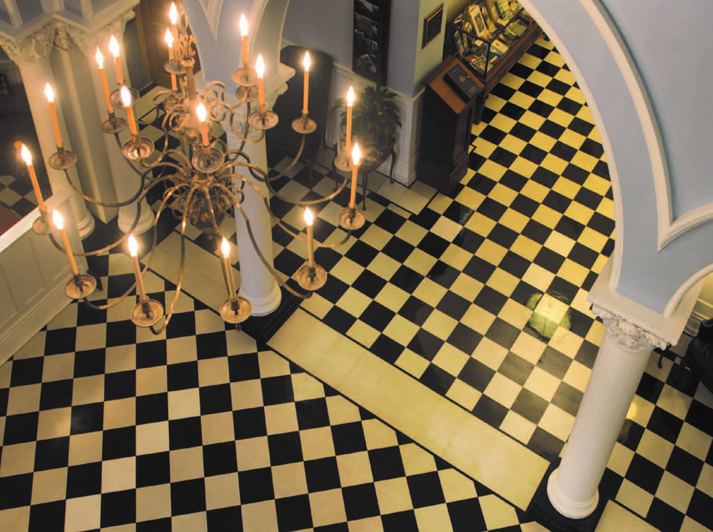

The second floor of Stewart Hall, which houses the Office of the Provost,
is reached by ascending a wide staircase
in the entry hall. From the open
atrium area on this floor, a viewer can look down on the striking black and
white
checkerboard floor of the President’s lobby. The second floor was
originally intended as an exhibit space for the
University’s natural history
collection. Today, the open lobby area houses a rotating exhibit of art from
the University’s
permanent collection.
Stewart Hall is rich in architectural history and detail. It is also a soaring and
even mysterious
building –from the strange figures carved on its exterior
walls to the echoes that rise from the
main floor up to the domed rotunda.
And as the home of the Office of the President
and Office of the Provost,
it is at the heart of West Virginia University, a symbol of all that we
have
accomplished, and of all we will achieve in the years to come.

